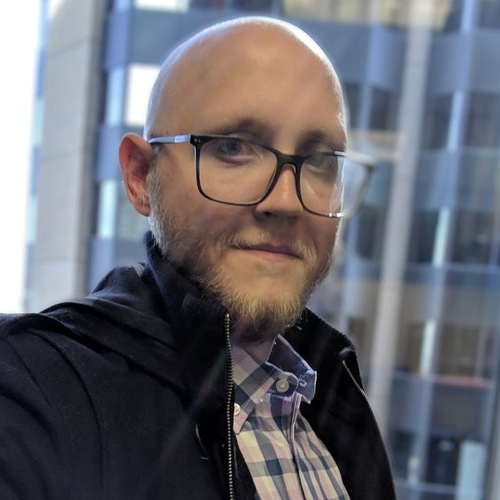

About Me
Welcome all, to the world of Me! My name is Bradley Knutson and I am a burgeoning developer and entrepreneur. Starting late 2019, I am a student at the DU coding bootcamp focusing on web development using the MERN stack. It has always been a dream of mine to be a programmer and I have hit my jump off point. I have experience with web development (HTML, CSS, Javascript, etc) as well as programming using Python, C++, and bit of C#. Although I have not yet had my first job using these skills, I plan to become more proficient in them and begin my career.
My side projects consist of using various Raspberry Pis for different objectives such as a Pi Hole, which is used for blocking advertisements at the network level as opposed to in a browser or application. I am also writing plans for a full arcade cabinet using a new Raspberry Pi to emulate as many games as possible, both in terms of classic arcade and older generation console games such as the Sega Genesis.
On a normal day you'd find me playing video games, reading a science fiction novel, riding my motorcycle (Kawasaki Z1000) or just sitting back and relaxing with my collection of Rubik's Cubes. I have a unique talent for puzzles and brain teasers and thus spend a decent amount of my time looking for new challenges.